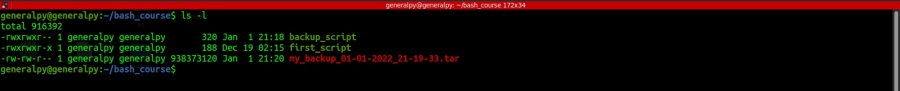

Backup Script Project Brief
Scenario
Your boss has noticed that you do some very valuable work for the company, and, to
ensure it doesn't get lost, they have suggested that you create a script that you can
use to easily backup all the files in your home directory.
Your boss also thinks that this script will be very useful for others in the office, and
wants you to make sure the script is professionally formatted before sharing it with
your colleagues.
Your Task
Step 1: Create a bash script called backup_script in your ~/bash_course/ directory.
This script should backup all the files in your home directory and save them all in a
.tar archive . Guidance is provided below on how to do this.
When writing your script, remember to add all the core components of your script:
1. The “Shebang” line
2. Commands ( see the "extra guidance" section below )
3. An exit statement with an appropriate exit code.
As well as the 5 pieces of professional information:
1. Author
2. Date Created
3. Last Modified
4. Description
5. Usage
Step 2: Give the script the correct permissions.
Because the script will be shared with others in your organisation, your script should
have the following permissions:
● The file owner (i.e you) should have read, write, and execute permissions.
● Everyone in the file’s group (i.e. your colleagues) should have read and
execute permissions. For security purposes, they should not have write
permissions.
● Everyone else in the organisation should only have read permissions.
Use permissions-calculator.org/ to figure out the correct octal code to use with the
chmod command to achieve this.
Step 3: Run your script multiple times to check that it's working.
You should see it creating multiple backups for you in your ~/bash_course folder.
Extra Guidance
To build this script, you are going to use the tar command.
If the tar command is new to you, don't worry! All you need to know is that the tar
command is used to create .tar archives, which are basically .zip files, but more
“Linuxy”.
Right now, we just want you to use the tar command to practice building
professional scripts.
Your script will use the below command (feel free to copy and paste it):
tar -cvf ~/bash_course/my_backup_"$(date +%d-%m-%Y_%H-%M-%S)".tar ~/* 2>/dev/null
This command takes the contents of your home directory, compresses it into a .tar
archive, and saves that archive into the ~/bash_course folder.
The command also names the backup according to the current date and time. For
example, a backup made on the 12th July 2020 at 12:00:00 (midday) would be
saved as my_backup_12-07-2020_12-00-00.tar
#!/bin/bash
#Author : Prakash
#Creation On : 01/01/2022
#Last Modified : 01/01/2022
#Description
#Creates backup of home directory and puts it into ~/bash_course/ directory. Flushes error to /dev/null.
#Usage
#./backup_script
tar -cvf ~/bash_course/my_backup_"$(date +%d-%m-%Y_%H-%M-%S)".tar ~/* 2>/dev/null
exit 0
